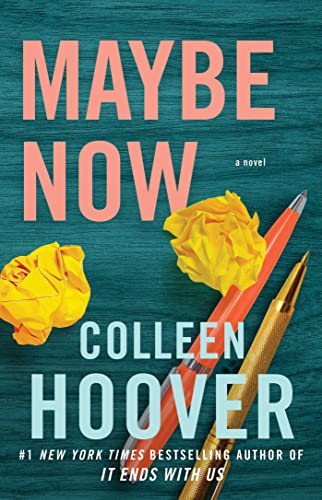
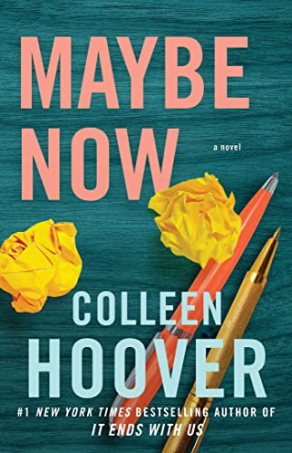

- It ends with us
- Ugly Love
- November 9
- Reminders of Him
- Verity
- All your perfects
- Layla
- Slammed
- Heart bones
Books that I have read

Sometimes it is the one who loves you who hurts you the most.
Lily hasn’t always had it easy, but that’s never stopped her from working hard for the life she wants. She’s come a long way from the small town in Maine where she grew up — she graduated from college, moved to Boston, and started her own business. So when she feels a spark with a gorgeous neurosurgeon named Ryle Kincaid, everything in Lily’s life suddenly seems almost too good to be true.
Ryle is assertive, stubborn, maybe even a little arrogant. He’s also sensitive, brilliant, and has a total soft spot for Lily. And the way he looks in scrubs certainly doesn’t hurt. Lily can’t get him out of her head. But Ryle’s complete aversion to relationships is disturbing. Even as Lily finds herself becoming the exception to his “no dating” rule, she can’t help but wonder what made him that way in the first place.
As questions about her new relationship overwhelm her, so do thoughts of Atlas Corrigan — her first love and a link to the past she left behind. He was her kindred spirit, her protector. When Atlas suddenly reappears, everything Lily has built with Ryle is threatened.

When Tate Collins meets airline pilot Miles Archer, she knows it isn’t love at first sight. They wouldn’t even go so far as to consider themselves friends. The only thing Tate and Miles have in common is an undeniable mutual attraction. Once their desires are out in the open, they realize they have the perfect set-up. He doesn’t want love, she doesn’t have time for love, so that just leaves the sex. Their arrangement could be surprisingly seamless, as long as Tate can stick to the only two rules Miles has for her.
Never ask about the past.
Don’t expect a future.
They think they can handle it, but realize almost immediately they can’t handle it at all.
Hearts get infiltrated.
Promises get broken.
Rules get shattered.
Love gets ugly.
Fallon meets Ben, an aspiring novelist, the day before her scheduled cross-country move. Their untimely attraction leads them to spend Fallon’s last day in L.A. together, and her eventful life becomes the creative inspiration Ben has always sought for his novel. Over time and amidst the various relationships and tribulations of their own separate lives, they continue to meet on the same date every year. Until one day Fallon becomes unsure if Ben has been telling her the truth or fabricating a perfect reality for the sake of the ultimate plot twist.
Can Ben’s relationship with Fallon—and simultaneously his novel—be considered a love story if it ends in heartbreak?

A troubled young mother yearns for a shot at redemption in this heartbreaking yet hopeful story from #1 New York Times bestselling author Colleen Hoover. After serving five years in prison for a tragic mistake, Kenna Rowan returns to the town where it all went wrong, hoping to reunite with her four-year-old daughter. But the bridges Kenna burned are proving impossible to rebuild. Everyone in her daughter’s life is determined to shut Kenna out, no matter how hard she works to prove herself. The only person who hasn’t closed the door on her completely is Ledger Ward, a local bar owner and one of the few remaining links to Kenna’s daughter. But if anyone were to discover how Ledger is slowly becoming an important part of Kenna’s life, both would risk losing the trust of everyone important to them. The two form a connection despite the pressure surrounding them, but as their romance grows, so does the risk. Kenna must find a way to absolve the mistakes of her past in order to build a future out of hope and healing

Lowen Ashleigh is a struggling writer on the brink of financial ruin when she accepts the job offer of a lifetime. Jeremy Crawford, husband of bestselling author Verity Crawford, has hired Lowen to complete the remaining books in a successful series his injured wife is unable to finish.
Lowen arrives at the Crawford home, ready to sort through years of Verity's notes and outlines, hoping to find enough material to get her started. What Lowen doesn't expect to uncover in the chaotic office is an unfinished autobiography Verity never intended for anyone to read. Page after page of bone-chilling admissions, including Verity's recollection of what really happened the day her daughter died.
Lowen decides to keep the manuscript hidden from Jeremy, knowing its contents would devastate the already grieving father. But as Lowen's feelings for Jeremy begin to intensify, she recognizes all the ways she could benefit if he were to read his wife's words. After all, no matter how devoted Jeremy is to his injured wife, a truth this horrifying would make it impossible for him to continue to love her.

Colleen Hoover delivers a tour de force novel about a troubled marriage and the one old forgotten promise that might be able to save it.
Quinn and Graham’s perfect love is threatened by their imperfect marriage. The memories, mistakes, and secrets that they have built up over the years are now tearing them apart. The one thing that could save them might also be the very thing that pushes their marriage beyond the point of repair.
All Your Perfects is a profound novel about a damaged couple whose potential future hinges on promises made in the past. This is a heartbreaking page-turner that asks: Can a resounding love with a perfect beginning survive a lifetime between two imperfect people?
When Leeds meets Layla, he’s convinced he’ll spend the rest of his life with her—until an unexpected attack leaves Layla fighting for her life. After weeks in the hospital, Layla recovers physically, but the emotional and mental scarring has altered the woman Leeds fell in love with. In order to put their relationship back on track, Leeds whisks Layla away to the bed-and-breakfast where they first met. Once they arrive, Layla’s behavior takes a bizarre turn. And that’s just one of many inexplicable occurrences.
Feeling distant from Layla, Leeds soon finds solace in Willow—another guest of the B&B with whom he forms a connection through their shared concerns. As his curiosity for Willow grows, his decision to help her find answers puts him in direct conflict with Layla’s well-being. Leeds soon realizes he has to make a choice because he can’t help both of them. But if he makes the wrong choice, it could be detrimental for all of them.

Following the unexpected death of her father, 18-year-old Layken is forced to be the rock for both her mother and younger brother. Outwardly, she appears resilient and tenacious, but inwardly, she's losing hope.
Enter Will Cooper: The attractive, 21-year-old new neighbor with an intriguing passion for slam poetry and a unique sense of humor. Within days of their introduction, Will and Layken form an intense emotional connection, leaving Layken with a renewed sense of hope.
Not long after an intense, heart-stopping first date, they are slammed to the core when a shocking revelation forces their new relationship to a sudden halt. Daily interactions become impossibly painful as they struggle to find a balance between the feelings that pull them together, and the secret that keeps them apart.
Life and a dismal last name are the only two things Beyah Grim's parents ever gave her. After carving her path all on her own, Beyah is well on her way to bigger and better things, thanks to no one but herself.
With only two short months separating her from the future she's built and the past she desperately wants to leave behind, an unexpected death leaves Beyah with no place to go during the interim. Forced to reach out to her last resort, Beyah has to spend the remainder of her summer on a peninsula in Texas with a father she barely knows. Beyah's plan is to keep her head down and let the summer slip by seamlessly, but her new neighbor Samson throws a wrench in that plan.
Samson and Beyah have nothing in common on the surface.
She comes from a life of poverty and neglect; he comes from a family of wealth and privilege. But one thing they do have in common is that they're both drawn to sad things. Which means they're drawn to each other. With an almost immediate connection too intense for them to continue denying, Beyah and Samson agree to stay in the shallow end of a summer fling. What Beyah doesn't realize is that a rip current is coming, and it's about to drag her heart out to sea.

 
